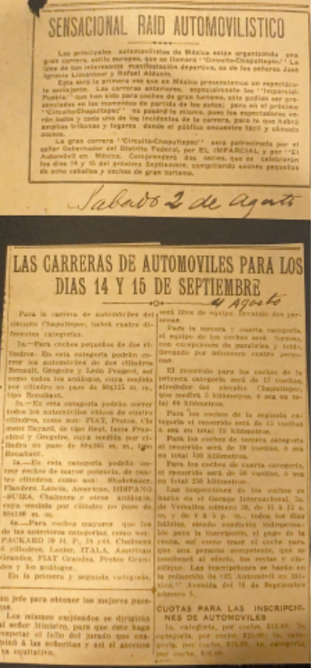

Homenajes en honor de Rafael Alducin con motivo de los 100 años de su fallecimiento en 1924.
Periodista, entusiasta de las carreras de automóviles, editor de la Revista El Automóvil en México, fundador del diario Excélsior en 1917 e impulsor del festejo del día de las madres el 10 de mayo de 1922
